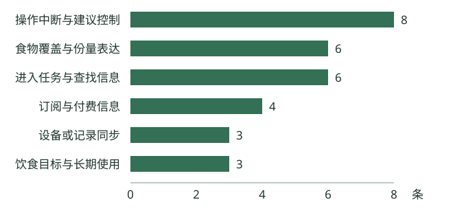

从饮食 App 评论到 NutriPal 人物卡与设计
一条简单的食材查询为什么会被放弃？想持续记录的人在哪一步停下来？饮食建议何时会变成打扰？我们从五款饮食 App 的公开评论中寻找具体经历，再把这些经历转化为校园用餐场景和基础版设计任务。
一、样本与分析方法
本研究采用公开用户评价做二手用户研究。数据集包含 Cronometer、FatSecret、Lose It!、MyFitnessPal 和 Yazio 的 39,192 条评论。原抽样范围为 2025 年起、正文至少 70 个字符的记录。每款 App 按 1–2 星、3 星、4–5 星分层，层内按去除首尾空白后的正文去重、排序，使用固定随机种子 1126 各抽 2 条。每款 6 条，共 30 条。本次逐条核对了样本的应用名、星级和正文。
先阅读整条评论，记录用户想完成的事、遇到的阻碍或认可的做法，再将原有细标签合并为六个主题。图中每条只计入一个主要主题，人物卡可引用同一条评论中的其他线索。例如 R28 在图中计入操作中断，其一次补记多餐的习惯也为持续记录型人物卡提供了依据。
二、评论里出现了什么

图 1 每根柱表示该主题的评论条数，包含正面和负面反馈。分层抽样有意给不同评分相同权重，图中数量仅描述这 30 条样本。
| 主要主题 | 评论编号 | 从原文读到的经历 |
|---|
| 操作中断与建议控制 | R02、R03、R04、R25、R26、R27、R28、R30 | 涉及广告、动画或建议打断操作。只有 R30 明确提出关闭饮食提示，不能把其余七条都算成通知需求。 |
| 食物覆盖与份量表达 | R09、R10、R11、R12、R15、R18 | 有用户找不到熟悉的菜或合适的单位，也有人认可本地菜覆盖和自建食物。 |
| 进入任务与查找信息 | R07、R08、R14、R20、R22、R24 | 首次使用者遇到注册和问卷门槛，老用户则描述入口变化或当天汇总难找。 |
| 订阅与付费信息 | R13、R21、R23、R29 | 包括扣费、退款、付费限制和订阅权益说明。 |
| 设备或记录同步 | R06、R16、R19 | 既有连接设备成功的经历，也有运动数据不全和饮食日记丢失。 |
| 饮食目标与长期使用 | R01、R05、R17 | 有人因目标不合适停用，有人重视掌控感，也有人长期用 App 调整饮食。 |
查看 30 条评论原文、星级与细标签 · 查看五款 App 评论数据
三、从问题建立人物卡，再推演使用场景
以下三张卡按用户想完成的事组织。评论提供行为依据，学生身份、姓名和校园生活情节是设计设定。样本没有学生身份字段，同一人也可能在不同餐次表现出几种需求。
Alex · 即时查询型
评论中的问题。R07 想查烹饪原料的热量，却遇到账户和个人信息要求。R08 只想查奶油奶酪的热量，看到一串问题后放弃。两人的目标都很具体，使用成本在得到答案之前就已产生。
人物卡。Alex 自己做晚饭，希望更了解常吃餐食的营养。赶晚课时，只愿意为眼前这一餐花几分钟。能看懂一个可用的选项，就足以结束查询。
- 触发
准备晚餐时，Alex 想知道今晚打算做的豆腐菜每份大约有多少热量。 - 困难
搜索结果里有几种做法，但每道菜的份量可能不同，光看菜名很难比较。 - 选择
Alex 在 NutriPal 搜索豆腐，打开一道菜的详情，核对菜名、份量与营养信息。 - 结果
如果能说清数字对应哪道菜、多少份，Alex 就能决定今晚是否照着做；说不清则仍需另查。
产品设计与检验。优先让搜索和菜谱详情承担首次查询。评价时从首页开始，请操作者找到指定菜谱并说明热量对应的份量，记录成功人数、耗时和单位误读。评论中的单一食材查询比当前菜谱搜索更细，仍是覆盖缺口。
Sam · 持续记录型
评论中的问题。R28 描述自己习惯一次补记多餐。R10 因预设单位与实际用量不合而无法继续，R12 总体满意却仍希望能输入特殊份量。可见坚持记录的人也需要处理不标准的一餐。
人物卡。Sam 通过记录份量了解日常饮食，常在晚上一起补记。和室友分食时，最难的是把自己盛的半盘对应到 App 的一份。
- 触发
合租晚餐结束，Sam 想在洗碗前补上今天的记录。 - 困难
菜是几人分的，直接接受默认一份会留下自己也不相信的数字。 - 选择
Sam 在模拟识别页调整份量，查看估算值随之如何变化，再决定是否记录到晚餐。 - 结果
如果能说明估算依据，Sam 可以接受一个近似值；若份量仍无法表达，跳过记录也揭示了设计缺口。
产品设计与检验。先验证份量、单位和记录入口。给定一个与默认值不同的份量，观察是否能正确调整、读出估算值并找到记录入口。真实识别准确率及长期坚持情况须另行研究。
Riley · 自主控制型
评论中的问题。R30 喜欢记录食物，却希望能关闭每次记录后的建议。R01 因系统目标与个人目标冲突而停用。R05 则认可可以掌控自己吃什么、吃多少。共同线索是用户希望决定接受哪种帮助。
人物卡。Riley 希望规律吃午饭，在课表变动时仍能自己决定何时看建议。今天暂缓一次和今后都关闭，对 Riley 有不同后果。
- 触发
午餐时间临近，Riley 还在实验室完成最后一轮操作。 - 困难
此时查看建议会分心，但 Riley 仍想在其他日子收到午餐建议。 - 选择
在原型的提醒预览与设置中，Riley 查看原因并选择暂缓，同时保留主动建议。 - 结果
实验结束后，Riley 自己查看餐食建议。理想结果是能够预判下次提醒是否还会出现。
产品设计与检验。把忽略本次、暂缓和关闭做成含义清晰的操作。请操作者处理一次不合时宜的建议，随后解释提醒状态。记录误关次数。校园提醒时机是由控制需求推演的假设。
四、本轮设计结论
优先选三个可观察的时刻做基础版评价：首次搜索后能否解释每份营养值，调整份量后能否准确读出估算，暂缓建议后能否说清提醒状态。订阅和同步问题也出现在样本中，留作竞品背景。下一轮可邀请目标学生讲述最近一次类似经历，并尝试相应任务，以判断这些问题在校园场景中是否也会发生。
附录 · 供原型评价阶段使用的情景走查、功能清单、指标与分工
三、基于已发布交互的情景走查
补充走查 · 在大字号下规划一餐。 ① 在 Me 开启大字号；② 回首页搜索 Tofu；③ 打开一个菜谱查看详情；④ 另进周计划，选定日期与餐次，记下原菜；⑤ 使用 Swap，更换预设菜品；⑥ 指出哪个餐次发生变化，再打开购物清单勾选已有食材。观察搜索与计划之间的导航、替换反馈和长菜名的可读性。搜索与计划是两个任务入口。
Riley · 管理一次不合时宜的提醒。 ① 从 Me 进入提醒预览；② 查看触发情境；③ 当下不需要做饭，选择 Not now；④ 返回设置查看上次提醒原因；⑤ 尝试 Snooze 或调整提醒频率；⑥ 说明暂缓与关闭主动建议的区别。由主持人核对界面显示的状态；只评价演示内的理解与操作。
Sam · 核对餐食份量。 打开 F06 的模拟识别结果，调整份量，说明估算热量的变化，再执行 Log to Dinner 并指出页面去向。
四、已发布基础版与后续边界
| 页面 | 本次评价纳入的发布功能 |
|---|
| F01 偏好 | 选择固定忌口，添加自定义食材，保存偏好；从 Me 返回编辑。 |
| F02 首页／推荐 | 营养摘要、推荐卡片、91 道本地菜谱目录、中英文搜索、建议、空结果和详情。 |
| F03 餐食计划 | 切换日期、查看餐次、编辑食材、预设换餐与重新生成计划。当前换餐采用预设候选；“替换前后每份热量更低”的判断作为后续研究题。 |
| F03b 购物清单 | 查看与勾选条目、分享清单；配送为演示入口。 |
| F04 主动建议预览 | 查看情境和预设建议，选择 Cook this、Other ideas 或 Not now。 |
| F05 提醒设置 | 主动建议开关、Snooze、频率、上次提醒原因与反馈。 |
| F06 食物识别演示 | 查看预设识别结果、调整份量、查看估算热量、执行 Log to Dinner 后返回首页。 |
| Me 与显示 | 全局大字号、中英文切换、目标和偏好摘要、提醒预览与设置入口。 |
后续扩展单列：基于可比份量的低热量替换与解释、真实摄像识别与准确率、实时情境感知、外部推送与真实配送。当前原型以本地 Mock 和预设情境呈现这些交互。
五、后续评价指标
指标针对现有交互。先记录完成数／实际尝试数、首次操作耗时、求助和关键错误。以下均为测试计划，实测结果待填。
| 任务 | 完成与判断依据 |
|---|
| 设置偏好 → 搜索菜谱 | 能保存并找回自定义忌口；能找到指定食谱并打开详情；遇到空结果可恢复。分别记录完成率与搜索耗时。 |
| 计划换餐 → 购物清单 | 在指定日期及餐次完成替换，准确指出新菜名；记录误换日期或餐次次数。另测勾选指定食材与找到分享入口是否成功。 |
| 主动建议与提醒控制 | 分别核对换一个建议、拒绝本次、暂缓和关闭的操作；记录误关次数、能说明触发原因和后续设置状态的人数。 |
| 模拟识别与份量 | 记录正确调整到指定份量、读出对应估算热量、找到记录入口的人数；只测交互正确性。 |
| 大字号与语言 | 记录能独立找到并开启设置的人数；在相同手机视口复做搜索、换餐和提醒任务，记录任务完成与关键字被截断、遮挡、单位错配次数。关键控件不可达计为阻塞。 |
六、执行分工与记录
- 研究负责人复核评论编号和人物卡依据，标出一手材料、公开评论与假设。
- 主持人准备对应的情境卡、指定菜名、目标餐次与起始页面，给出目标，避免透露按钮名称。
- 观察员每次记录：角色／情境／字号／版本／成功、求助或失败／秒数／误读／实际餐单／操作者对结果的解释。
- 原型负责人保留修改前截图，按优先级修正误换餐次、误关提醒和大字号阻塞，再安排复测。
组员轮换操作，优先由未设计该页面的人首次尝试。报告写实际人数及分母，区分组内走查与目标学生测试。尚无实测数据时，提交研究发现、情景和验收方案；走查后再补结果、改动及复测证据。
资料
公开评论数据来源为 Mann Acharya 的 180K Health & Fitness App Reviews (23 Apps)，沿用 CC BY-SA 4.0。任务对应 NutriPal 基础版原型。